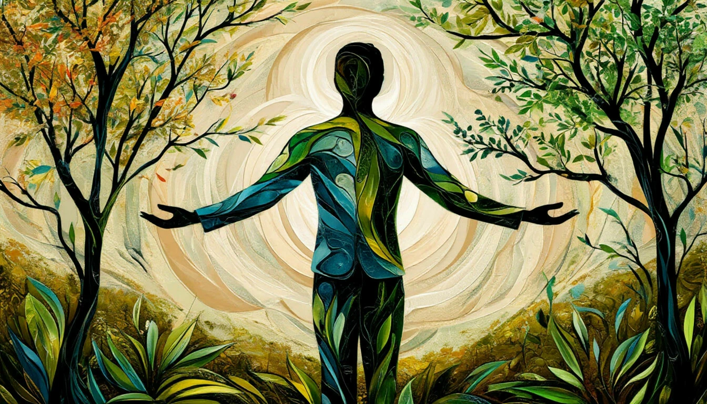

Страх
Шаг 1. Первый день
Когда я только открыл первый урок, мне казалось, что HTML — это магия. <div> </div> — что это вообще такое? Руки дрожали, но я решил не сдаваться.
Когда я только открыл первый урок, мне казалось, что HTML — это магия. <div> </div> — что это вообще такое? Руки дрожали, но я решил не сдаваться.
Когда у меня получилось сверстать первую карточку — я прыгал от счастья! Оказывается, это не так страшно. Главное — понять логику и не бояться экспериментировать.
Позиционирование — моя боль. Абсолютное, относительное, фиксированное... Голова шла кругом. Я несколько раз хотел всё бросить, но что-то внутри говорило: «Продолжай».
В один момент я понял, как работает Flexbox. Это было похоже на щелчок в голове. Всё вдруг стало логичным и простым. Я наконец-то увидел, как элементы подчиняются мне, а не я им.
Grid-сетки открыли новый мир. Двумерная раскладка, которая раньше казалась чем-то невероятным, теперь стала моим любимым инструментом. Я чувствовал себя архитектором веба.

ГармонияМедиазапросы сделали мои сайты живыми. Они подстраиваются под любые экраны — от огромных мониторов до крошечных телефонов. Это как магия, только настоящая и написанная кодом.
 Вдохновение
Вдохновение
CSS-анимации вдохнули жизнь в мои проекты. Плавные переходы, трансформации, keyframes — сайты стали не просто статичными страницами, а настоящими историями.
 Финал
Финал
Я прошёл этот путь. Было страшно, трудно, временами хотелось плакать. Но я здесь. Я сделал это. И теперь я могу сверстать что угодно. Спасибо всем, кто был рядом!